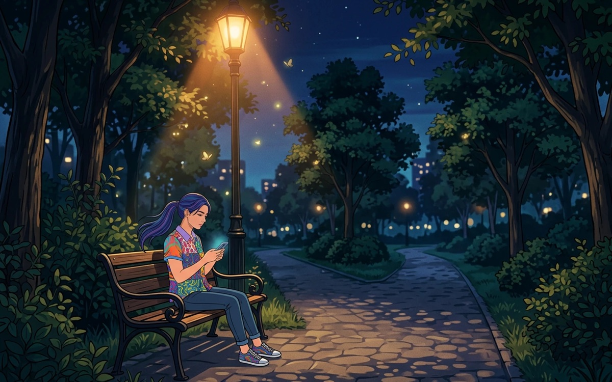
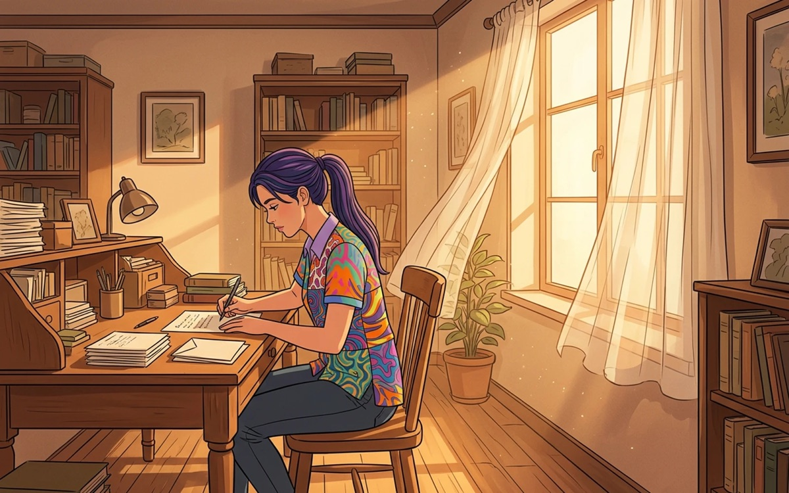
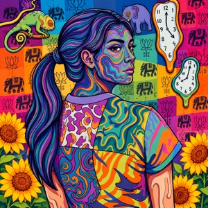

LYRIC VIDEO
30秒リリックビデオ
配信日に公開予定30秒リリックビデオ 公開中
TRACK 01
ナツカゼ

夏の終わりの静かな夜。
蝉の声が遠ざかり、誰もいないベンチでひとり、伝えられなかった想いを胸に抱く。
書いては消すメッセージ、夜空に消えていく記憶、そして肌をなぞる冷たい風。
「ナツカゼ」は、過ぎ去った季節とともに心に残る切ない想いを描いた楽曲。Kanonの瑞々しく透明感のある歌声が、夏の終わりの情景と淡い心の揺らぎを優しく包み込む。
リリック動画
CREDITS制作クレジット「ナツカゼ」
- ヴォーカル
- Kanon
- ベース
- ラリー藤本
- キーボード
- 野々村芳嗣
- 作詞・作曲・編曲、演奏、プロデュース、録音・ミックス・マスタリング
- 中藤世以
TRACK 02
未来への手紙

誰もが心の中に抱えている不安や迷い。
それでも、未来への希望を胸に、一歩ずつ歩いていく。
「未来への手紙」は、過去の涙や遠回りさえも自分の大切な足跡として受け止め、まだ見ぬ未来へ想いを綴っていく、希望に満ちた楽曲。
うまくいかない日も、答えが見つからない日も、決して無駄ではない。Kanonの瑞々しく素直な歌声が、優しさと力強さを届ける。
明日の自分へ、そして大切な誰かへ。
希望も不安も抱きしめながら、未来へ歩き出すための一曲。
リリック動画
CREDITS制作クレジット「未来への手紙」
- ヴォーカル
- Kanon
- 作詞・作曲・編曲、演奏、プロデュース、録音・ミックス・マスタリング
- 中藤世以
STREAMING
配信リンク
配信開始後、このページから各ストアで聴けるようになります。各ストアで配信中です。お好きなサービスでお聴きください。
- Spotify近日配信
- Apple Music近日配信
- LINE MUSIC近日配信
- YouTube Music近日配信
MOVIE & SNS
動画・SNS
ナツカゼ
リリック動画
近日公開
未来への手紙
リリック動画
近日公開
最新情報は、所属レーベル POPVALUE RECORDS の公式アカウントからお届けします。
PROFILE
アーティスト紹介

Kanon
カノン
瑞々しく透明感のある歌声が魅力の
女性ボーカリスト。
何気ない日常にある想いや、心の中に生まれる小さな感情を、飾らない自然な歌声で表現する。
音楽との偶然の出会いから、その歌声が新しいプロジェクトの扉を開いた。
澄んだ歌声と素直な感性を大切に、聴く人の心に優しく残る音楽を届けていく。
ABOUT
POPVALUE RECORDSについて
POPVALUE RECORDS（ポップヴァリューレコーズ）は、音楽の制作から届けるところまでを手がける音楽レーベル／トータルプロダクションです。
これまで第一弾アーティスト「ブックエンズ」でアルバム1枚、EP1枚、シングル4枚をリリース。
今回第二段アーティストとしてKanonの「ナツカゼ」「未来への手紙」を2曲同時配信します。
お問い合わせ →